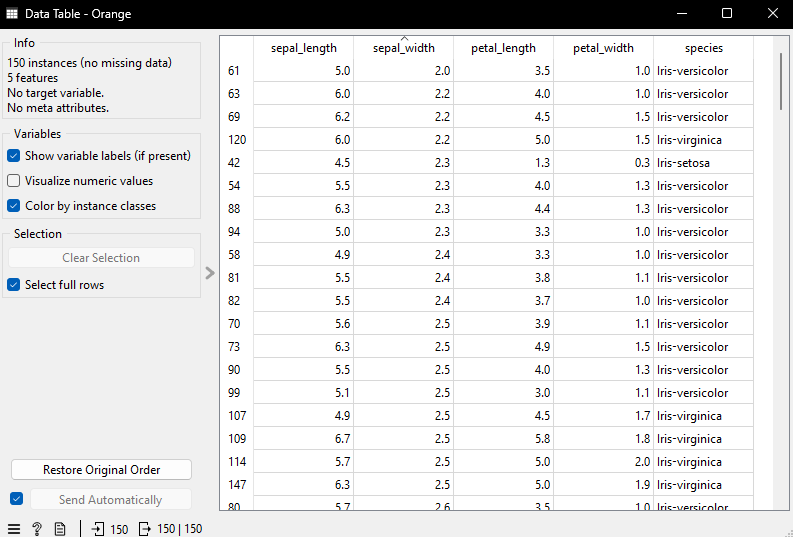
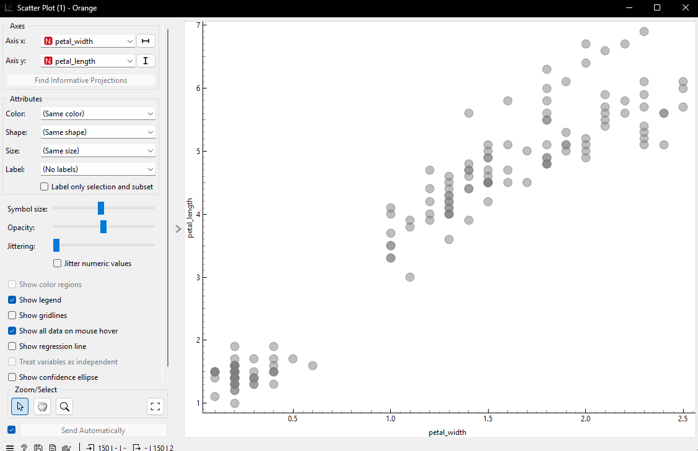

Pertemuan 2#
Data ,measurement, dan data processing
Memahami data(data understanding)#
mengumpulkan data
identifikasi data yang berkualitas
pemahaman data untuk mendeteksi bagian yang menarik dari data sehingga dapat membangun hipotesa terhadap informasi yang tersembunyi
komponen utama memahami data#
Koomponen |
penjelasan |
|---|---|
1. pengumpulan data awal |
mengidentifikasi dan mengumpulkan semua sumber data yang relevan (database ,file csv,api,dll) |
2. dekripsi data |
memahami struktur data: jumlah baris/kolom, jenis variabl(numerik ,kategorial), nama atribut, contoh data |
3. explorasi data(exploratory data analysis / EDA) |
mencari pola,tren,korrelasi,atau anomali menggunakan statistik deskriptif dan visualisasi (grafik , histrogram, sactter plot) |
4. kualitas data |
memeriksa kelengkapan, keakuratan,konsistensi data, misalnya: apakah ada data hilang( missing value )? apakah ada duplikat atau kesalahan input? |
atribut#
nominal / kategorikal
ordinal
biner
numerik: interval-scalled, ratio scalled
tugas pertemuan 2#
eksplorasi data iris
cari data deksriptif data
visualisasi data
https://mulaab.github.io/datamining/memahami-data/
kode python#
import pandas as pd
from scipy import stats
df = pd.read_csv("IRIS.csv")
kolom_numerik = df.select_dtypes(include=['number']).columns
for usecolom in kolom_numerik:
print("-" * 40)
print(f"ANALISIS KOLOM: {usecolom}")
print("-" * 40)
print("jumlah data ", df[usecolom].count())
print("rata-rata ", df[usecolom].mean())
print("nila minimal ", df[usecolom].min())
print("Q1 ", df[usecolom].quantile(0.25))
print("Q2 ", df[usecolom].quantile(0.5))
print("Q3 ", df[usecolom].quantile(0.75))
print("Nilai Max ", df[usecolom].max())
print("kemencengan", "{0:.2f}".format(round(df[usecolom].skew(), 2)))
mode_res = stats.mode(df[usecolom], keepdims=True)
print("Nilai modus {} dengan jumlah {}".format(mode_res.mode[0], mode_res.count[0]))
print("kemencengan ", "{0:.6f}".format(round(df[usecolom].skew(), 6)))
print("Standar Deviasi ", "{0:.2f}".format(round(df[usecolom].std(), 2)))
print("Variansi ", "{0:.2f}".format(round(df[usecolom].var(), 2)))
print("\n")
col = 'species'
print("-" * 40)
print(f"ANALISIS KOLOM KATEGORIKAL: {col}")
print("-" * 40)
print("Jumlah total data :", df[col].count())
print("Jumlah spesies unik:", df[col].nunique())
print("Daftar spesies :", df[col].unique())
print("\nJumlah data per spesies:")
print(df[col].value_counts())
modus_spesies = df[col].mode()[0]
jumlah_modus = df[col].value_counts().max()
print(f"\nModus : {modus_spesies}")
print(f"Jumlah kemunculan : {jumlah_modus}")
analisis iris#
ANALISIS KOLOM: sepal_length#
jumlah data 150
rata-rata 5.843333333333334
nila minimal 4.3
Q1 5.1
Q2 5.8
Q3 6.4
Nilai Max 7.9
kemencengan 0.31
Nilai modus 5.0 dengan jumlah 10
kemencengan 0.314911
Standar Deviasi 0.83
Variansi 0.69
ANALISIS KOLOM: sepal_width#
jumlah data 150
rata-rata 3.0540000000000003
nila minimal 2.0
Q1 2.8
Q2 3.0
Q3 3.3
Nilai Max 4.4
kemencengan 0.33
Nilai modus 3.0 dengan jumlah 26
kemencengan 0.334053
Standar Deviasi 0.43
Variansi 0.19
ANALISIS KOLOM: petal_length#
jumlah data 150
rata-rata 3.758666666666666
nila minimal 1.0
Q1 1.6
Q2 4.35
Q3 5.1
Nilai Max 6.9
kemencengan -0.27
Nilai modus 1.5 dengan jumlah 14
kemencengan -0.274464
Standar Deviasi 1.76
Variansi 3.11
ANALISIS KOLOM: petal_width#
jumlah data 150
rata-rata 1.1986666666666668
nila minimal 0.1
Q1 0.3
Q2 1.3
Q3 1.8
Nilai Max 2.5
kemencengan -0.10
Nilai modus 0.2 dengan jumlah 28
kemencengan -0.104997
Standar Deviasi 0.76
Variansi 0.58
ANALISIS KOLOM KATEGORIKAL: species#
Jumlah total data : 150
Jumlah spesies unik: 3
Daftar spesies : [‘Iris-setosa’ ‘Iris-versicolor’ ‘Iris-virginica’]
Jumlah data per spesies:
species
Iris-setosa 50
Iris-versicolor 50
Iris-virginica 50
Name: count, dtype: int64
Modus : Iris-setosa
Jumlah kemunculan : 50
VISUALISASI#
column statistic#

data table#

scatter#


corelation#